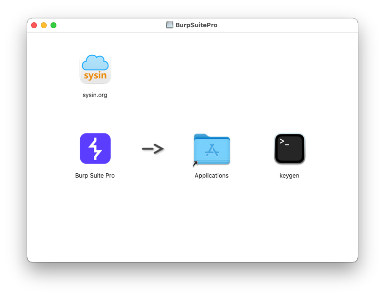
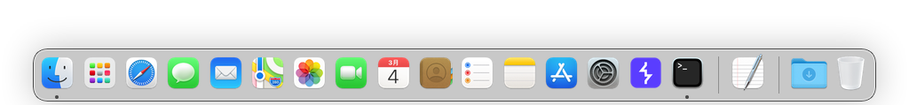
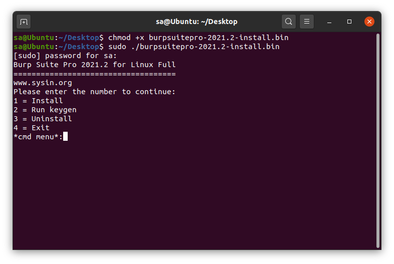
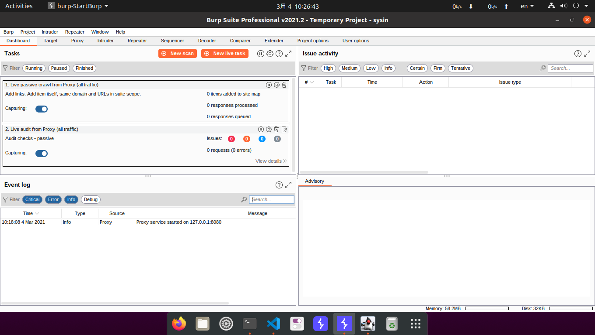

请访问原文链接：Burp Suite Pro 2021.2 (macOS, Linux) -- 查找、发现和利用漏洞，查看最新版。原创作品，转载请保留出处。
作者：gc(at)sysin.org，主页：www.sysin.org
简介
Burp Suite Professional 是一套用于测试 web 安全性的高级工具集 —- 所有这些都在一个产品中。从一个基本的拦截代理到尖端的 Burp 扫描器，使用 Burp Suite Pro，正确的工具只需点击一下就可以了。
我们强大的自动化让您有更多的机会做您最擅长的，而 Burp Suite 处理容易实现的目标。先进的手动工具将帮助你识别目标更微妙的盲点。
Burp Suite Pro 是由一个研究团队开发的。这意味着在我们发布之前，发现成果已经包含在我们的最新更新中。我们的 pentesting 工具将使您的工作更快，同时让您了解最新的攻击向量。
功能介绍
Manual penetration testing features 手动渗透测试功能

- Intercept everything your browser sees
A powerful proxy/history lets you modify all HTTP(S) communications passing through your browser.
- Manage recon data
All target data is aggregated and stored in a target site map - with filtering and annotation functions.
- Expose hidden attack surface
Find hidden target functionality with an advanced automatic discovery function for “invisible” content.
- Test for clickjacking attacks
Generate and confirm clickjacking attacks for potentially vulnerable web pages, with specialist tooling.
- Work with WebSockets
WebSockets messages get their own specific history - allowing you to view and modify them.
- Break HTTPS effectively
Proxy even secure HTTPS traffic. Installing your unique CA certificate removes associated browser security warnings.
- Manually test for out-of-band vulnerabilities
Make use of a dedicated client to incorporate Burp Suite’s out-of-band (OAST) capabilities during manual testing.
- Speed up granular workflows
Modify and reissue individual HTTP and WebSocket messages, and analyze the response - within a single window.
- Quickly assess your target
Determine the size of your target application. Auto-enumeration of static and dynamic URLs, and URL parameters.
- Assess token strength
Easily test the quality of randomness in data items intended to be unpredictable (e.g. tokens).
Advanced/custom automated attacks 高级/自定义自动攻击
- Faster brute-forcing and fuzzing
Deploy custom sequences of HTTP requests containing multiple payload sets. Radically reduce time spent on many tasks.
- Query automated attack results
Capture automated results in customized tables, then filter and annotate to find interesting entries/improve subsequent attacks.
- Construct CSRF exploits
Easily generate CSRF proof-of-concept attacks. Select any suitable request to generate exploit HTML.
- Facilitate deeper manual testing
See reflected/stored inputs even when a bug is not confirmed. Facilitates testing for issues like XSS.
- Scan as you browse
The option to passively scan every request you make, or to perform active scans on specific URLs.
- Automatically modify HTTP messages
Settings to automatically modify responses. Match and replace rules for both responses and requests.

Automated scanning for vulnerabilities 自动扫描漏洞

- Harness pioneering AST technology
High signal: low noise. Scan with pioneering, friction-free, out-of-band-application security testing (OAST).
- Conquer client-side attack surfaces
Hybrid AST and built-in JavaScript analysis engine help to find holes in client-side attack surfaces.
- Fuel vulnerability coverage with research
Cutting-edge scan logic from PortSwigger Research combines with coverage of over 100 generic bugs.
- Fine-tune scan control
Get fine-grained control, with a user-driven scanning methodology. Or, run “point-and-click” scans.
- Remediate bugs effectively
Custom descriptions and step-by-step remediation advice for every bug, from PortSwigger Research.
- Configure scan behavior
Customize what you audit, and how. Skip specific checks, fine-tune insertion points, and much more.
- Navigate difficult applications
Crawl more complex targets. Burp Suite’s crawler identifies locations based on content - not just URL.
- Effectively apply IAST
Source identification and vulnerability reporting simplified, with optional code instrumentation.
- Experience browser-driven scanning
Browser-driven scanning is already striding toward better coverage of tricky targets like AJAX-heavy single page apps.
Productivity tools 生产力工具
- Deep-dive message analysis
Show follow-up, analysis, reference, discovery, and remediation in a feature-rich HTTP editor.
- Utilize both built-in and custom configurations
Access predefined configurations for common tasks, or save and reuse custom configurations.
- Multiply project options
Auto-save all working projects to disk, and add configurations to pre-saved projects.
- Make code more readable
Automatically pretty-print code formats including JSON, JavaScript, CSS, HTML, and XML.
- Easily remediate scan results
See source, discovery, contents, and remediation, for every bug, with aggregated application data.
- Simplify scan reporting
Customize with HTML/XML formats. Report all evidence identified, including issue details.
- Speed up data transformation
Decode or encode data, with multiple built-in operations (e.g. Hex, Octal, Base64).

Extensions 扩展

- Create custom extensions
Extender API ensures universal adaptability. Code custom extensions to make Burp work for you.
- Logger++
For in-depth vulnerability detail, ordered and arranged in an easily accessible table, make use of Logger++.
- Autorize
When testing for authorization vulnerabilities, save time and perform repeat requests with Autorize.
- Turbo Intruder
Configured in Python, with a custom HTTP stack, Turbo Intruder can unleash thousands of requests per second.
- J2EE Scan
Expand your Java-specific vulnerability catalogue and hunt the most niche bugs, with J2EEScan.
- Access the extension library
The BApp Store customizes and extends capabilities. Over 250 extensions, written and tested by Burp users.
- Upload Scanner
Adapt Burp Scanner’s attacks by uploading and testing multiple file-type payloads, with Upload Scanner.
- AuthMatrix
Run AuthMatrix with Autorize to define your access-level vulnerability authorization check.
- Param Miner
Quickly find unkeyed inputs with Param Miner - can guess up to 65,000 parameter names per second.
- Backslash Powered Scanner
Find research-grade bugs, and bridge human intuition and automation, with Backslash Powered Scanner.
下载地址
Burp Suite Pro for macOS
链接: https://pan.baidu.com/s/1M2hz7uvT0SmAyIqCjW5RJg 密码: 1q6v集成 keygen，直接运行，无需额外安装 Java

修复原版图标，Big Sur 图标适配

Burp Suite Pro for Linux
链接: https://pan.baidu.com/s/1HUvwJFDHoWYMPXMUEtWVng 密码: 54iu
安装：chmod +x burpsuitepro-2021.2-linux.bin && sudo ./burpsuitepro-2021.2-linux.bin集成安装、注册和卸载

主界面一览

促销信息：
>>全球网盘极速中转，1G流量不到1元，支持 Rapidgator、Rg.to、Uploaded...
>>阿里云：新用户2核2g仅需86元/年，2核4g企业仅需469.39元/年
>>腾讯云：云产品限时秒杀，爆款1核2G云服务器，首年99元
如果文章中使用的内容和图片侵犯了您的版权，请联系作者删除。如果您喜欢这篇文章或者觉得它对您有用，欢迎您发表评论，也欢迎您分享这个网站，或者赞赏一下作者，谢谢！
 支付宝打赏
支付宝打赏
 微信打赏
微信打赏
赞赏一下